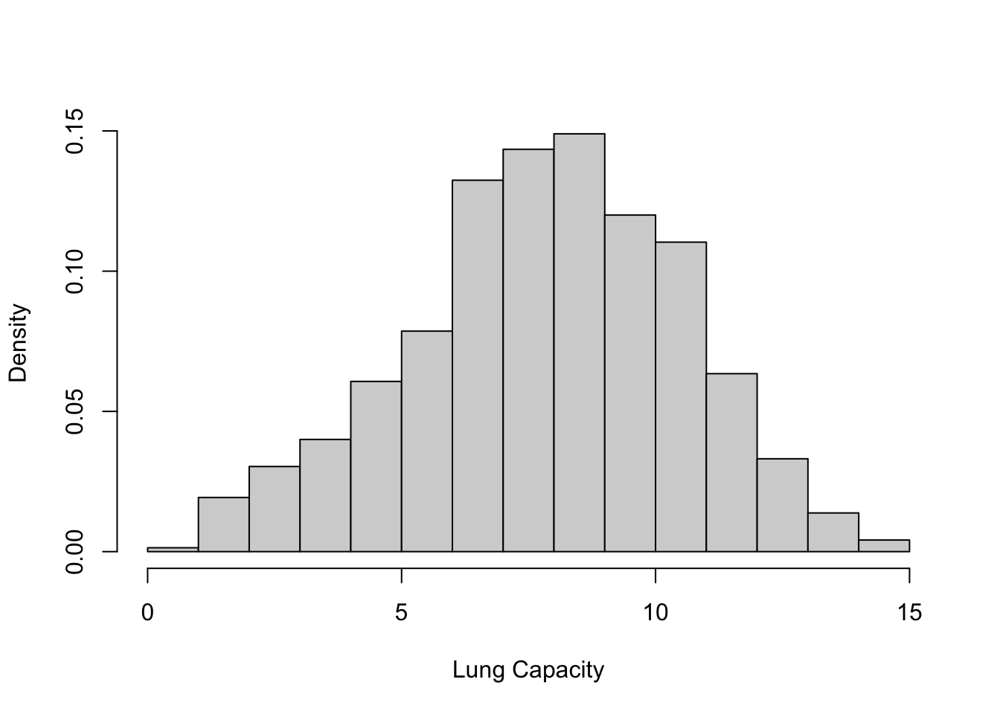

Code
library(readxl)
library(dplyr)
library(magrittr)
knitr::opts_chunk$set(echo = TRUE)Jerin Jacob
March 20, 2023
# A tibble: 725 × 6
LungCap Age Height Smoke Gender Caesarean
<dbl> <dbl> <dbl> <chr> <chr> <chr>
1 6.48 6 62.1 no male no
2 10.1 18 74.7 yes female no
3 9.55 16 69.7 no female yes
4 11.1 14 71 no male no
5 4.8 5 56.9 no male no
6 6.22 11 58.7 no female no
7 4.95 8 63.3 no male yes
8 7.32 11 70.4 no male no
9 8.88 15 70.5 no male no
10 6.8 11 59.2 no male no
# ℹ 715 more rows LungCap Age Height Smoke
Min. : 0.507 Min. : 3.00 Min. :45.30 Length:725
1st Qu.: 6.150 1st Qu.: 9.00 1st Qu.:59.90 Class :character
Median : 8.000 Median :13.00 Median :65.40 Mode :character
Mean : 7.863 Mean :12.33 Mean :64.84
3rd Qu.: 9.800 3rd Qu.:15.00 3rd Qu.:70.30
Max. :14.675 Max. :19.00 Max. :81.80
Gender Caesarean
Length:725 Length:725
Class :character Class :character
Mode :character Mode :character

The histogram shows that the distribution is almost a normal distribution with most of the values close to the mean. ## B
The minimum, first quartile, median, third quartile and maximum, all of them appear to be slightly higher for males than females.
Lung capacity of non-smokers is higher than that of smokers which is against the expectation!
# A tibble: 8 × 3
Smoke LungCap Age
<chr> <dbl> <chr>
1 no 6.36 <=13
2 yes 7.20 <=13
3 no 9.14 14&15
4 yes 8.39 14&15
5 no 10.5 16&17
6 yes 9.38 16&17
7 no 11.1 >=18
8 yes 10.5 >=18 Error in ggplot(new_df, aes(fill = Smoke, y = LungCap, x = Age)): could not find function "ggplot"Error in ggplot(dff, aes(y = LungCap, x = Smoke, fill = Smoke)): could not find function "ggplot"Only age group that showed similar result that of step C is <=13. The analysis could go wrong if the lung capacity of smokers and non smokers are studied without considering the age.
# A tibble: 5 × 2
X Frequency
<dbl> <dbl>
1 0 128
2 1 434
3 2 160
4 3 64
5 4 24[1] 810---
title: "Homework 1"
author: "Jerin Jacob"
desription: "Homework 1- 603 Spring 2023"
date: "03/20/2023"
format:
html:
toc: true
code-fold: true
code-copy: true
code-tools: true
categories:
- hw1
- challenge1
- Jerin Jacob
- Lung Capacity Data
- ggplot2
- tidyverse
-
---
```{r}
#| label: setup
#| warning: false
library(readxl)
library(dplyr)
library(magrittr)
knitr::opts_chunk$set(echo = TRUE)
```
# Question 1
## Loading the Data
```{r}
df <- read_excel("_data/LungCapData.xls")
df
```
## A
```{r}
summary(df)
hist(df$LungCap, xlab = "Lung Capacity", main = "", freq = F)
```
The histogram shows that the distribution is almost a normal distribution with most of the values close to the mean.
## B
```{r}
boxplot(LungCap ~ Gender, df)
```
The minimum, first quartile, median, third quartile and maximum, all of them appear to be slightly higher for males than females.
## C
```{r}
dff<- df |>
group_by(Smoke) |>
summarise(LungCap = mean(LungCap))
```
Lung capacity of non-smokers is higher than that of smokers which is against the expectation!
## D
### Age less than or equal to 13
```{r}
df1 <- df |>
filter(Age <= 13) |>
group_by(Smoke)|>
summarise(LungCap = mean(LungCap)) |>
mutate(Age = "<=13")
df1
```
### Age 14 & 15
```{r}
df2 <- df |>
filter(Age >= 14 & Age <= 15) |>
group_by(Smoke)|>
summarise(LungCap = mean(LungCap))|>
mutate(Age = "14&15")
class(df2)
```
### Age 16 to 17
```{r}
df3 <- df |>
filter(Age >= 16 & Age <= 17) |>
group_by(Smoke)|>
summarise(LungCap = mean(LungCap))|>
mutate(Age = "16&17")
```
### Age greater than or equal to 18
```{r}
df4 <- df |>
filter(Age >= 18) |>
group_by(Smoke)|>
summarise(LungCap = mean(LungCap))|>
mutate(Age = ">=18")
```
## E
```{r}
new_df <- rbind(df1,df2, df3,df4)
new_df
ggplot(new_df, aes(fill=Smoke, y=LungCap, x=Age)) +
geom_bar(position='dodge', stat='identity')
ggplot(dff, aes(y=LungCap, x=Smoke, fill = Smoke)) +
geom_bar(position='dodge', stat='identity')
```
Only age group that showed similar result that of step C is <=13. The analysis could go wrong if the lung capacity of smokers and non smokers are studied without considering the age.
# Question 2
```{r}
df_prison <- tibble(X = c(0,1,2,3,4), Frequency = c(128,434,160,64,24))
df_prison
n <- sum(df_prison$Frequency)
n
```
```{r}
df_prison |>
filter(X == 2) |>
pull(Frequency) |>
divide_by(n)
```
```{r}
```